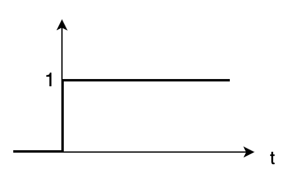
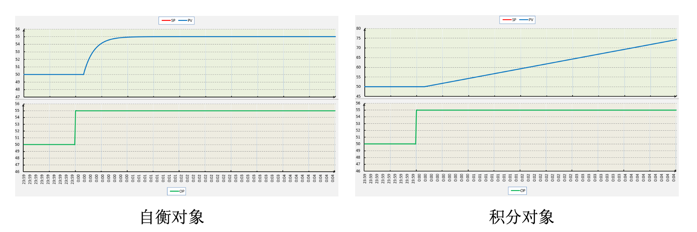
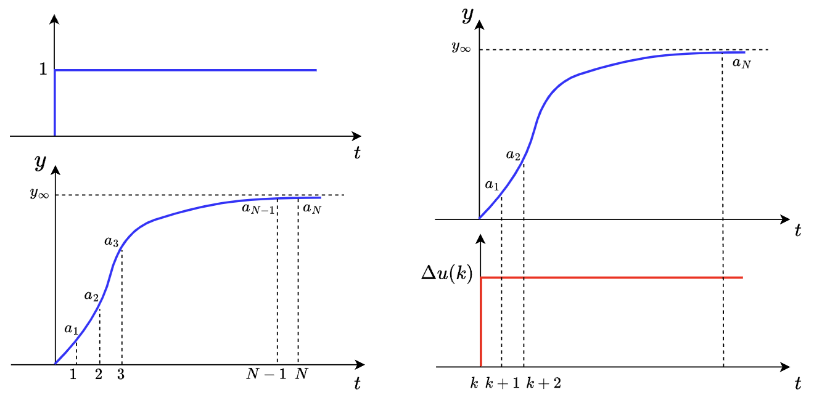
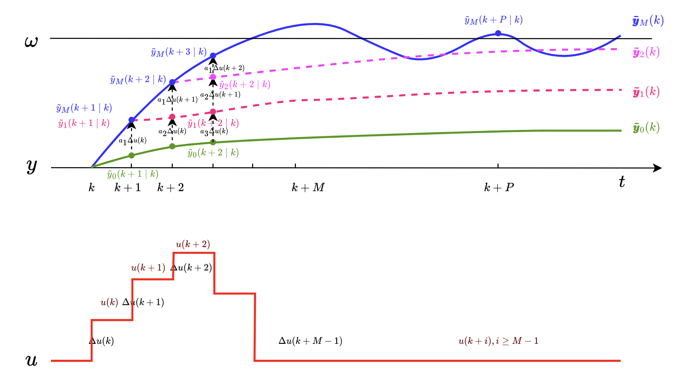
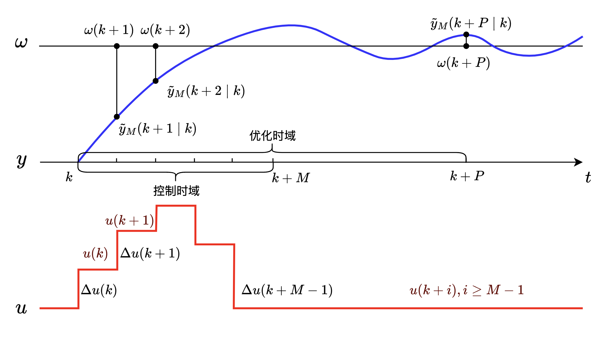
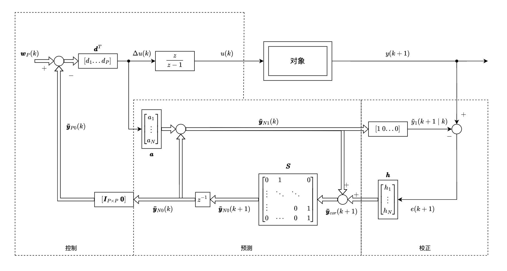
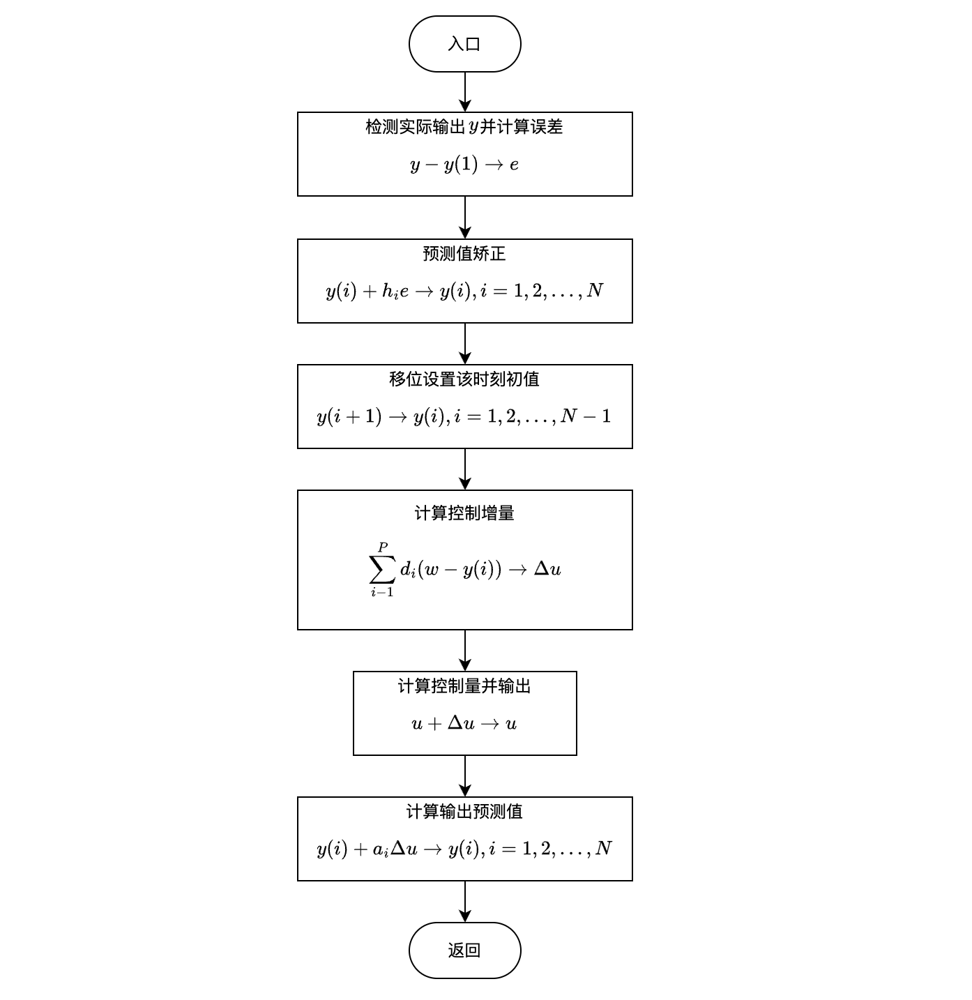

动态矩阵控制
动态矩阵控制（DMC）是一种基于对象阶跃响应的预测控制算法，因而适用于渐近稳定的线性对象。对于弱非线性对象，可在工作点处首先线性化；对于不稳定对象，可先用常规 PID 控制使其稳定，然后再使用 DMC 算法。
DMC 算法包括预测模型、滚动优化和反馈校正3个部分。
先验知识
单位阶跃信号
\[ \varepsilon(t) = \begin{cases} 0, & t < 0 \\\\ 1, & t \geq 0 \end{cases} \tag{1} \]

自衡对象和积分对象
工业过程中常见的过程有自衡和非自衡两种，下图显示了两个过程对输出阶跃变化的理想化趋势。左边的过程是非积分对象，也叫自衡对象；右边的过程是非自衡对象，也叫积分对象。如下图左侧所示，自衡对象能够响应控制器输出并逐渐达到新的稳态操作点，典型的自衡对象如调节阀控制的流量；如右侧所示，积分过程没有平衡点，即控制器输出变化后过程在一个方向持续变化，除非进行新的干预否则积分过程将持续变化而无法达到新的稳态，典型的积分对象如液位。

线性系统的叠加原理
线性系统必须满足线性叠加性和线性齐次性。假设一系统对输入 \(x_1(t)\) 的响应输出为 \(y_1(t)\)，对输入 \(x_2(t)\) 的响应输出为 \(y_2(t)\)。
（1）线性叠加性：线性系统对输入 \(x_1(t) + x_2(t)\) 的响应输出一定是 \(y_1(t) + y_2(t)\)。
（2）线性齐次性：线性系统对输入 \(ax_1(t)\) 的响应输出一定是 \(ay_1(t)\)。
（3）将（1）和（2）结合，即线性系统对输入 \(ax_1(t) + bx_2(t)\) 的响应输出一定是 \(ay_1(t) + by_2(t)\)。
预测模型
在 DMC 中，首先要对被控对象施加单位阶跃信号，来获得对象的单位阶跃响应。然后根据采样周期 \(T\) 来测定对象单位阶跃响应的采样值 \(a_i = y(iT), \ i = 1, 2, 3, ...\) ，如图 3 左侧所示。对于渐近稳定的对象，阶跃响应在某一时刻 \(t=NT\) 后将趋于平稳，以致 \(a_i(i>N)\) 与 \(a_N\) 的差已减小到与量化误差及测量误差有相同的数量级，因而可认为 \(a_N\) 已近似等于阶跃响应在 \(t \rightarrow \infty\) 时的稳态值 \(y_{\infty}\)。这样，对象的动态信息就可近似地用有限集合 \(\{a_1, a_2, a_3, ..., a_{N-1}, a_N\}\) 加以描述，这个集合的参数构成了 DMC 的模型参数，这些参数也被称为动态系数，向量 $ = [a_1, a_2, a_3, ..., a_{N-1}, a_N]^T $ 称为模型向量，其中，\(N\)被称为建模时域（模型时域长度）。

如图 3 右侧所示，如果在 \(k\) 时刻，对被控对象施加一个阶跃信号 \(\Delta u(k)\)，根据线性系统的叠加原理，可以预测系统在 \(\Delta u(k)\)作用下未来时刻的输出为： \[ \begin{aligned} \tilde y_1(k+1\mid k) &= \tilde y_0(k+1\mid k) + a_1 \Delta u(k) \\ \tilde y_1(k+2\mid k) &= \tilde y_0(k+2\mid k) + a_2 \Delta u(k) \\ & ... \\ \tilde y_1(k+N\mid k) &= \tilde y_0(k+N\mid k) + a_N \Delta u(k) \end{aligned} \tag{2} \] 其中，\(\tilde y_0(k+1\mid k), \tilde y_0(k+2\mid k), ... ,\tilde y_0(k+N\mid k)\) 是由 \(k\) 时刻以前其他控制量作用在系统上的系统响应，亦被称为初始预测值。把式（2）转化为向量形式为： \[ \pmb{\tilde y}_1(k) = \pmb{\tilde y}_0(k) + \pmb{a} \ \Delta{u(k)} \tag{3} \] 其中，\(\pmb{\tilde y}_1(k) = [\tilde y_1(k+1\mid k), \tilde y_1(k+2\mid k), ..., \tilde y_1(k+N\mid k)]^T\)，\(\pmb{\tilde y}_0(k) = [\tilde y_0(k+1\mid k), \tilde y_0(k+2\mid k), ... ,\tilde y_0(k+N\mid k)]^T\)，\(\pmb{a}\) 为模型向量（动态系数），\(\Delta{u(k)}\) 是在 \(k\) 时刻对系统施加的信号，其是一个标量。

如图 4 所示，如果系统被施加的控制增量在 \(k\) 时刻之后（含 \(k\) 时刻）的 \(M\) 个采样间隔都变化，为 \(\Delta{u(k)}, \Delta{u(k+1)}, ..., \Delta{u(k+M-1)}\) ，则系统未来 \(P\) 个时刻的预测模型输出为： \[ \begin{aligned} \tilde y_M(k+1\mid k) &= \tilde y_0(k+1\mid k) + a_1 \Delta u(k) \\ \tilde y_M(k+2\mid k) &= \tilde y_0(k+2\mid k) + a_2 \Delta u(k) + a_1 \Delta u(k+1)\\ &... \\ \tilde y_M(k+P\mid k) &= \tilde y_0(k+P\mid k) + a_P \Delta u(k) + a_{P-1} \Delta u(k+1) + \ ... \ + a_{P-M+1} \Delta u(k+M-1) \end{aligned} \tag{4} \] 式（4）可以合并整理为： \[ \tilde y_M(k+i\mid k) = \tilde y_0(k+i\mid k) + \sum_{j=1}^{min(M, i)} a_{i-j+1} \Delta u(k+j-1) + , \ i=1,...,P \tag{5} \] 转化为向量/矩阵形式为： \[ \pmb{\tilde y}_M(k) = \pmb{\tilde y}_0(k) + \pmb{A} \ \Delta{\pmb{u}(k)} \tag{6} \] 即 \[ \begin{pmatrix} \tilde y_M(k+1\mid k) \\ \tilde y_M(k+2\mid k) \\ \vdots \\ \tilde y_M(k+P\mid k) \end{pmatrix}_{P \times 1} = \begin{pmatrix} \tilde y_0(k+1\mid k) \\ \tilde y_0(k+2\mid k) \\ \vdots \\ \tilde y_0(k+P\mid k) \end{pmatrix}_{P \times 1} + \begin{pmatrix} a_1 & 0 & 0 & \cdots & 0\\ a_2 & a_1 & 0 & \cdots & 0\\ a_3 & a_2 & a_1 & \cdots & 0\\ \vdots & \vdots & \vdots & & \vdots\\ a_P & a_{P-1} & a_{P-2} & \cdots & a_{P-M+1} \end{pmatrix}_{P \times M} \begin{pmatrix} \Delta u(k) \\ \Delta u(k+1) \\ \vdots \\ \Delta u(k+M-1) \end{pmatrix}_{M \times 1} \] 其中，\(\pmb A\) 被称为动态矩阵。\(M\) 为控制时域长度，\(P\) 为优化时域长度，通常 \(M\) 和 \(P\) 满足 \(M \leq P \leq N\)。
滚动优化
DMC 是一种通过优化确定控制输入的算法。在每一时刻 \(k\)，要确定从该时刻起的 \(M\) 个控制增量 \(\Delta u(k), ..., \Delta u(k+M-1)\) ，使得在其作用下被控对象未来 \(P\) 个时刻的输出预测值 \(\tilde y_M(k+1\mid k),...,\tilde y_M(k+P\mid k)\) 尽可能地接近给定的期望 \(\omega(k+1),..., \omega(k+P)\) ，如下图所示。

除了要求输出跟踪给定的期望值外，在控制过程中还希望控制增量 \(\Delta u\) 不要剧烈变化，这一因素可在优化性能指标中加入软约束予以考虑。因此，\(k\) 时刻的优化性能指标（优化目标函数）可取为： \[ minJ(k) = \sum_{i=1}^{P} q_i \ [\ \omega(k+i)-\tilde y_M(k+i\mid k) \ ]^2 + \sum_{j=1}^{M} r_j \ \Delta u^2(k+j-1) \tag{7} \] 其中，\(q_i, r_j\) 是是权系数，它们分别表示对跟踪误差及控制量变化的抑制程度。当存在对控制量和输出量的约束时，该优化问题需结合约束条件求解，是一个典型的二次规划问题。如果不考虑约束的情况下，上述问题就是在动态模型式（6）约束下，以 \(\Delta \pmb{u}(k) = [\Delta u(k), ..., \Delta u(k+M-1)]^T\) 为优化变量，使性能指标式（7）最小的优化问题。
式（7）可以改写成向量的形式： \[ \begin{aligned} minJ(k) &= [\ \pmb{\omega}(k)- \pmb{\tilde y}_M(k) \ ]^T \ \pmb{Q} \ [\ \pmb{\omega}(k)- \pmb{\tilde y}_M(k) \ ] + \pmb{\Delta u}^T(k)\ \pmb{R}\ \pmb{\Delta u}(k) \\ &= ||\pmb{\omega}(k)- \pmb{\tilde y}_M(k)||^2_{\pmb{Q}} + ||\pmb{\Delta u}(k)||^2_{\pmb{R}} \end{aligned} \tag{8} \] 其中， $$ \[\begin{aligned} \pmb{\omega}(k) &= [\ \omega(k+1), \omega(k+2),..., \omega(k+P) \ ]^T \\ \\ \pmb Q &= diag(q_1, q_2, ..., q_P) = \begin{pmatrix} q_1 & 0 & \cdots & 0\\ 0 & q_2 & \cdots & 0\\ \vdots & \vdots & \ddots & \vdots\\ 0 & 0 & \cdots & q_P \end{pmatrix}_{P\times P} \\ \\ \pmb R &= diag(r_1, r_2, ..., r_M) = \begin{pmatrix} r_1 & 0 & \cdots & 0\\ 0 & r_2 & \cdots & 0\\ \vdots & \vdots & \ddots & \vdots\\ 0 & 0 & \cdots & r_M \end{pmatrix}_{M\times M} \end{aligned}\]$$ 由权系数构成的对角阵 \(Q, R\) 分别称为误差权矩阵和控制权矩阵。
将式（6）代入式（8），可得： \[ minJ(k) = ||\pmb{\omega}(k)- \pmb{\tilde y}_0(k) - \pmb A \ \Delta{\pmb{u}(k)}||^2_{\pmb{Q}} + ||\pmb{\Delta u}(k)||^2_{\pmb{R}} \tag{9} \] 在 \(k\) 时刻，\(\pmb{\omega}(k), \pmb{\tilde y}_0(k)\) 均为已知，使 \(J(k)\) 取极小的 \(\pmb{\Delta u}(k)\) 可通过极值必要条件 \(\frac{dJ(k)}{d \pmb{\Delta u}(k)} = 0\) 求得 \[ \pmb{\Delta u}(k) = (\pmb{A}^T \pmb{Q} \pmb{A} + \pmb{R})^{-1} \pmb{A}^T \pmb{Q} [\ \pmb{\omega}(k)- \pmb{\tilde y}_0(k) \ ] \tag{10} \]
- 证明式（10）：（二次型的求导）
\[ \begin{aligned} &\quad \quad \quad \quad \quad \quad \quad \quad \quad \frac{dJ(k)}{d \pmb{\Delta u}(k)} = 0 \\ &\Rightarrow - 2 \pmb{A}^T \pmb{Q} [\ \pmb{\omega}(k)- \pmb{\tilde y}_0(k) - \pmb A \ \Delta{\pmb{u}(k)} \ ] + 2 \pmb{R} \ \pmb{\Delta u}(k) = 0 \\ &\Rightarrow 2(\pmb{A}^T \pmb{Q} \pmb{A} + \pmb{R}) \pmb{\Delta u}(k) = 2 \pmb{A}^T \pmb{Q} [\ \pmb{\omega}(k)- \pmb{\tilde y}_0(k) \ ]\\ &\Rightarrow \pmb{\Delta u}(k) = (\pmb{A}^T \pmb{Q} \pmb{A} + \pmb{R})^{-1} \pmb{A}^T \pmb{Q} [\ \pmb{\omega}(k)- \pmb{\tilde y}_0(k) \ ] \end{aligned} \]
公式（10）给出了 \(k\) 时刻优化所得到的 \(\Delta u(k), ..., \Delta u(k+M-1)\) 的最优值。但 DMC 并不把它们全部实施，而只是取其中的即时控制增量 \(\Delta u(k)\) 构成实际控制作用于对象。 \(\Delta u(k)\) 是 \(\pmb{\Delta u}(k)\) 的第一个元素，它可以表示为： \[ \Delta u(k) = \pmb{c}^T \pmb{\Delta u}(k) = \pmb{d}^T [\ \pmb{\omega}(k)- \pmb{\tilde y}_0(k) \ ] \tag{11} \] 其中，\(M\) 维行向量 \(\pmb{c}^T = [\ 1 \ 0 \ ... \ 0 \ ]\) 表示取后续矩阵中首行的运算，\(P\) 维行向量 \[ \pmb{d}^T = \pmb{c}^T (\pmb{A}^T \pmb{Q} \pmb{A} + \pmb{R})^{-1} \pmb{A}^T \pmb{Q} \triangleq [\ d_1 \ ... \ d_p \ ] \tag{12} \]
- \(x \triangleq y\) 读作 \(x\) 定义为 \(y\) 。
称为控制向量。一旦优化策略确定（即 \(P,M,Q,R\) 确定），则 \(\pmb{d}^T\) 可由式（12）一次离线算出。式（11）就是DMC在无约束情况下控制律的解析式。这样，优化问题的在线求解就简化为直接计算控制律式（11），这是十分简易的。需强调的是，一旦在优化问题中考虑了系统存在的输入输出约束，则其解便不能以上述解析形式（10）给出，也得不到控制律的解析式（11）。
在求出控制增量 \(\Delta u(k)\) 后，实际控制量为:
\[ u(k) = u(k-1) + \Delta u(k) \tag{13} \]
将 \(u(k)\) 作用于对象，到下一时刻，又以 \(k+1\) 取代 \(k\) 提出同样的优化问题求出 \(\Delta u(k+1)\)，得到 \(u(k+1)\) 作用于对象。如此滚动进行，这就是 “滚动优化” 的含义。
反馈校正
当 \(k\) 时刻把控制 \(u(k)\) 实施于对象时，相当于在对象输入端加上了一个幅值为 $ u(k) $ 的阶跃，利用预测模型公式（2），可算出在其作用下未来时刻的输出预测值： \[ \pmb{\tilde y}_{N1}(k) = \pmb{\tilde y}_{N0}(k) + \pmb{a} \ \Delta{u(k)} \tag{14} \] 它为公式（2）的向量形式，由于在实际中存在模型失配、环境干扰等未知因素，由式（14）给出的预测值有可能偏离实际值，若不及时利用实时信息进行反馈校正，下一步的优化将建立在不准确的模型预测基础上，随着过程的进行，预测输出有可能越来越偏离实际输出。为了防止只依赖模型的开环优化所造成的误差，DMC 在 \(k+1\) 时刻计算优化控制量前，需先检测对象的实际输出 \(y(k+1)\)，并把它与由式（14）给出的模型预测的该时刻输出 \(\tilde y_1(k+1\mid k)\) 相比较，构成输出误差 \[ e(k+1) = y(k+1) - \tilde y_1(k+1\mid k) \tag{15} \] 这一误差信息反映了模型中未包括的不确定因素对输出的影响，可用来预测未来的输出误差，用以补充基于模型的预测。由于对误差的产生缺乏因果性的描述，故误差预测只能采用启发式的方法，例如，可采用对 \(e(k+1)\) 加权的方式修正对未来输出的预测 \[ \pmb{\tilde y}_{cor}(k+1) = \pmb{\tilde y}_{N1}(k) + \pmb{h} \ e(k+1) \tag{16} \] 其中， \[ \pmb{\tilde y}_{cor}(k+1) = \left[ \begin{matrix} \tilde y_{cor}(k+1|k+1)\\ \tilde y_{cor}(k+2|k+1)\\ \vdots\\ \tilde y_{cor}(k+N|k+1) \end{matrix} \right] \] 为校正后的输出预测向量，由权系数组成的 \(N\) 维向量 \(\pmb{h} = [h_1, h_2, \ ...,\ h_N]^T\)称为校正向量。
在 \(k+1\) 时刻，由于时间基点的变动，预测的未来时间点也将移到 \(k+2, k+3, \ ..., \ k+N+1\)，因此，\(\pmb{\tilde y}_{cor}(k+1)\) 的元素还需通过移位才能构成 \(k+1\) 时刻的初始预测值 \[ \tilde y_{0}(k+1+i|k+1) = \tilde y_{cor}(k+1+i|k+1), \ i=1,2,...,N-1 \tag{17} \] 而由于模型的截断，在 \(k\) 时刻预测中没有的 \(\tilde y_{cor}(k+1+N|k+1)\)，可由 \(\tilde y_{cor}(k+N|k+1)\)近似。这一通过移位对 \(k+1\) 刻初始预测值的设置可用向量形式表示为 \[ \pmb{\tilde y}_{N0}(k+1) = \pmb{S} \ \pmb{\tilde y}_{cor}(k+1) \tag{18} \] 其中，移位阵 \(\pmb{S}\) 定义为 \[ \pmb{S} = \left[ \begin{matrix} 0&1& &0\\ \vdots&\ddots&\ddots&\\ \vdots& &0&1\\ 0&\cdots&0&1 \end{matrix} \right] \] 有了 \(\pmb{\tilde y}_{N0}(k+1)\)，可像上面那样进行 \(k+1\)刻的优化计算，求出 \(\Delta{u(k+1)}\)。整个控制过程就是以这种结合反馈校正的滚动优化方式反复在线进行的。
DMC 算法结构

如图 6 所示，DMC 算法是由预测、控制、校正3部分构成的。图中粗箭头表示向量流，细箭头表示纯量流。在每一采样时刻，未来 \(P\) 个时刻的期望输出 \(\pmb{w}_P(k)\) 与初始预测输出 \(\pmb{\tilde y}_{P0}(k)\) 构成的偏差向量与动态控制向量 \(\pmb{d}^T\) 点乘（如式（11）所示），得到该时刻的控制增量 \(\Delta u(k)\)。这一控制增量一方面通过数字积分（累加）运算求出控制量 \(u(k)\) （如式（13）所示）并作用于对象，另一方面与模型向量 \(\pmb{a}\) 相乘，并按照公式 （14）计算出在其作用后的预测输出 \(\pmb{\tilde y}_{N1}(k)\)。到下一采样时刻，首先检测对象的实际输出 \(y(k+1)\)，并与预测值 \(\tilde y_1(k+1\mid k)\)（\(\pmb{\tilde y}_{N1}(k)\) 的第一项）相比较后按公式（15）计算出偏差 \(e(k+1)\)。这一误差与校正向量 \(\pmb{h}\) 相乘作为误差预测，再加入到模型预测中按式（16）得到校正后的预测输出 \(\pmb{\tilde y}_{cor}(k+1)\)，并按式（18）移位后作为新的初始预测值 \(\pmb{\tilde y}_{N0}(k+1)\)。图中 \(z^{-1}\) 表示时间基点的记号后推一步，这样等于把新的时刻重新定义为 \(k\) 时刻。整个过程将反复在线进行。
DMC 算法实现
无约束的DMC算法需要离线准备3组参数，即模型向量、控制向量和校正向量的参数，它们的来源分别如下：
（1）模型参数 \(\{a_i\}\) 可通过检测对象的单位阶跃响应并经光滑后得到。在这里需要强调的是，应尽可能滤除测量数据中的噪声和干扰，使得到的模型具有光滑的动态响应，否则会影响控制质量甚至造成不稳定。
（2）控制系数 \(\{d_i\}\) 是根据式（12）算出的，其中要用到模型参数 \({a_i}\)，而反映优化策略的参数 \(\pmb{P}\) 、\(\pmb{M}\)、\(\pmb{Q}\)、\(\pmb{R}\) 需要利用仿真程序进行整定后确定。
（3）校正系数 \(\{h_i\}\) 与上述两组参数均无关，可自由选择。
这 3 组动态系数确定后，应置入固定的内存单元，以便实时调用。

DMC 的在线计算由初始化模块与实时控制模块组成。初始化模块是在投入运行的第 1 步，先检测对象的实际输出 \(y(k)\) 并把它设定为输出预测初值 \(\tilde y_0(k+i\mid k), i=1,2,...,N\)。从第 2 步起即转入实时控制模块，在每一采样时刻的在线计算流程如图 7 所示，其中对未来输出的预测值只需设置一个 \(N\) 维数组 \(y(i)\)，流程图中的算式依次对应于式（15）、式（16）、式（17）、式（11）、式（13）和式（14）。注意在该流程图中设定值 \(\pmb{w}\) 是定值并事先置入内存。若需跟踪时变的轨线，则还应编制一个设定值模块，在线计算每一时刻优化时域内的输出期望值 \(w(i), i=1,2,...,P\)，并以此代替流程图中的 \(\pmb{w}\)。
需要指出的是，对于无约束 DMC 算法，由于优化问题具有解析解，在线优化已直接隐含在优化的结果式（11）中，因此在线计算只需要 \(\{a_i\}\)、 \(\{d_i\}\) 、\(\{h_i\}\) 3 组参数，不存在显式的优化求解过程。但对于有约束的DMC算法，控制增量 \(\Delta u(k)\) 需通过二次规划算法求得，不再有式（11）的解析解，这时要改用二次规划算法模块取代流程图中计算控制增量的解析表达式（11）。由于此时不存在控制向量 \(\pmb{d}^T\)，离线只需确定模型参数和校正参数。
参考
[1] 席裕庚. 预测控制 (第 2 版) [M]. 北京: 国防工业出版社, 2013(12): 10-16.